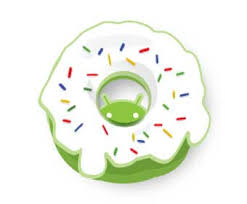
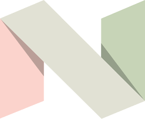

Bom, iremos falar agora sobre os versionamento do Android veremos sobre o android Cupcake, o android Donut, o adnroid Eclair, O android Gingerbread, o android jelly bean,
O android froyo, o android honeycomb, O android ice cream sandwich, O android lolipop, o android oreo, O android marshmallow, o android nougat e o android pie.
Versionamento/Versão: é uma estratégia para gerenciar as alterações feitas em um código, sistema ou modelo, através de diferentes versões. É uma forma de garantir a segurança na transição entre versões e de acompanhar as mudanças aplicadas.
O versionamento pode ser aplicado a vários tipos de arquivos, como textos e imagens. É possível acessar cada versão de forma separada e saber quem fez a alteração e por que.
O versionamento de software é importante por permitir: Catalogar a versão atual de um software ou hardware, Gerir atualizações e correções, Proteger o código-fonte, Analisar erros e ataques, Facilitar a colaboração entre equipes.
Android 1.5 Cupcake é a terceira versão
(descontinuada) do sistema operacional
móvel Android desenvolvida pela empresa
Google. A versão foi lançada em 27
de abril de 2009. O lançamento inclui
novas funcionalidades para usuários e desenvolvedores,
assim como mudanças no framework API do Android.
Características:
Carimbo de data / hora específico mostrado para
eventos em log de chamadas
Animações de transições de tela,
Auto-rotação da tela;
Nova animação de inicialização,
Capacidade de enviar vídeos
para o YouTube;
Capacidade de fazer upload de fotos para o Picasa;
Android 1.6 Donut é uma versão do sistema operacional
Android desenvolvida pela Google. O Android 1.6
Donut foi a segunda versão do Android a ser lançada comercialmente.
Esta versão teve baixa adoção dos usuários pois o Android ainda estava em desenvolvimento.
 Características:
Pesquisa de entrada de voz e texto aprimorada para incluir histórico de favoritos, contatos e a web;
Capacidade dos desenvolvedores de incluir seu conteúdo nos resultados da pesquisa;
Motor de Síntese de fala multilíngue para permitir que qualquer aplicativo Android "fale" uma sequência de texto;
Pesquisa mais fácil e a capacidade de visualizar capturas de tela do aplicativo no Android Market;
Galeria, câmera e filmadora totalmente integradas, com acesso mais rápido à câmera; Capacidade de os usuários selecionarem várias fotos para exclusão; Suporte de tecnologia atualizado para CDMA/EVDO, IEEE 802.1, VPNs e um mecanismo de texto para fala; Suporte para resoluções de tela WVGA (768×480);
Melhorias de velocidade em aplicativos de busca e câmera; Estrutura expandida do Gesture e uma nova ferramenta de desenvolvimento GestureBuilder.
Android 2.0 - 2.1 Eclair é uma versão descontinuada do
sistema operacional móvel Android desenvolvida pela
empresa Google, anunciado em 26 de outubro de 2009.
Android 2.1 baseia-se a partir de mudanças significantes
na versão Android 1.6 Donut
Sincronização de conta expandida, permitindo que os usuários adicionem
várias contas a um dispositivo para sincronização de e-mail e contatos;
Suporte para e-mail do Microsoft Exchange, com uma caixa de entrada
combinada para navegar por e-mail de várias contas em uma página;
Suporte para Bluetooth 2.1;
Capacidade de tocar em uma foto de Contatos
e selecionar ligar, enviar SMS ou enviar e-mail para a pessoa;
Capacidade de pesquisar todas as mensagens SMS e MMS salvas,
com a capacidade adicional de excluir as mensagens mais antigas em uma
conversa excluída automaticamente quando um limite definido é atingido;
Vários novos recursos da câmera, incluindo suporte a flash,
zoom digital, modo de cena, equilíbrio de branco,
efeito de cor e foco macro;
Maior velocidade
Android 2.2 - 2.2.3 Froyo é uma versão do sistema operacional móvel Android, desenvolvido pelo Google.
Lançado em maio de 2010, o Android 2.2 Froyo tem cinco
características principais: velocidade, maior interatividade,
navegador mais rápido, novos serviços e aplicativos
e melhorias no Android Market (atual Play Store)
Otimizações de velocidade, memória e desempenho;
Melhorias adicionais na velocidade do aplicativo,
implementadas por meio da compilação JIT;
Integração do motor V8 (JavaScript) do Chrome
no aplicativo do navegador;
Suporte para o serviço Android Cloud to Device Messaging
Deleniti, aliquid. Distinctio, velit.
Ipsam, blanditiis.
O navegador agora mostra todos os quadros de GIFs animados
em vez de apenas o primeiro quadro;
Suporte para instalação de aplicativos em memória expansível;
Suporte para Adobe Flash;
Suporte para telas de PPI alto (até 320 ppi)
como telas de quatro polegadas 720p;
A Galeria permite aos usuários visualizar pilhas de imagens
usando um gesto de zoom
Android 2.3 - 2.3.7 Gingerbread é uma versão do sistema
operacional Android desenvolvida pela Google
e lançada em 6 de dezembro de 2010.
Características:
Design de interface de usuário atualizado com maior
simplicidade e velocidade;
Suporte para tamanhos e resoluções
de tela extra-grandes WXGA (1366×768) e superiores;
Suporte nativo para telefones de Internet SIP VoIP;
Entrada de texto mais rápida e intuitiva em um teclado virtual,
com maior precisão, melhor texto sugerido e modo de entrada de voz;
Funcionalidade de copiar/colar
Android 3.0 - 3.2.6 Honeycomb é uma versão do sistema operacional Android desenvolvida pela Google.
A versão foi feita para dispositivos com telas maiores,
como tablets. Honeycomb também introduziu uma novo tema de interface de usuário "holográfico".
Suporte otimizado para tablet com uma nova interface de usuário holográfica;
Adicionada barra de sistema, com acesso rápido a notificações, status e botões de navegação
disponíveis na parte inferior da tela;
Adicionada a barra de ação, dando acesso a opções contextuais, navegação, widgets
ou outros tipos de conteúdo na parte superior da tela;
Multitarefa simplificada;
O teclado foi redesenhado, tornando a digitação rápida, eficiente e precisa em telas maiore;
Interface de copiar/colar simplificada e mais intuitiva;
Múltiplas guias do navegador substituindo as janelas do navegador, além do preenchimento automático de formulários e um novo modo “incógnito”, permitindo uma navegação um tanto anônima;
Acesso rápido à exposição da câmera, foco, flash, zoom, câmera frontal, lapso de tempo e outros recursos da câmera;
Capacidade de visualizar álbuns.
Android 4.0 - 4.0.4 Ice Cream Sandwich é uma versão do sistema operacional
Android desenvolvida pela Google. Foi lançado 18 de outubro de 2011
com a compatibilidade com o NFC, contador de uso de dados e uma nova interface.
Características:
Refinamentos importantes na interface Holo com a nova família de fontes Roboto;
Os botões virtuais do Android 3.x agora estão disponíveis para uso em telefones;
Separação de
widgets em uma nova guia, listada de maneira semelhante aos aplicativos;
Pastas mais fáceis
de criar, com um estilo de arrastar e soltar;
Correio de voz visual aprimorado com a capacidade
de acelerar ou desacelerar as mensagens do correio de voz;
Funcionalidade de pinçar para
aplicar zoom no calendário;
Captura de tela integrada (realizada pressionando os botões liga / desliga
e diminuir volume);
Correção de erros aprimorada no teclado;
Capacidade de acessar aplicativos
diretamente da tela de bloqueio;
Android Jelly Bean é o décimo codinome dado à versões do sistema operacional
móvel Android, desenvolvido pelo Google, abrange as versões entre o Android 4.1, 4.2 e 4.3.
 O primeiro dessas versões foi o 4.1, revelado na conferência de desenvolvedores
O primeiro dessas versões foi o 4.1, revelado na conferência de desenvolvedores
de Google I/O em junho de 2012. Ele se concentrou em melhorias de desempenho e
interface.
Android 4.3 também inclui um recurso de privacidade oculto conhecido como Ocultar App
o que permitiu que os usuários negassem individualmente permissões para aplicativos. No entanto, o recurso foi
removido mais tarde no Android 4.4.2. Um porta-voz do Google afirmou que o recurso era experimental e
poderia impedir que certos aplicativos funcionem corretamente se usado em determinadas maneiras.
br
Android KitKat é o codinome do décimo primeiro sistema
operacional móvel Android representando a versão de
lançamento 4.4. Revelado em 3 de setembro de 2013 o KitKat se
concentrou principalmente na otimização do sistema operacional
para melhor desempenho em dispositivos básicos com recursos
limitados. Em outubro de 2022, 1,39% dos dispositivos Android
executavam o KitKat. Em 24 de julho de 2023, o Google anunciou
que o Google Play Services não daria mais suporte ao KitKat
em agosto daquele ano.
O primeiro telefone com Android KitKat foi o Nexus 5 .
Android Lollipop é uma versão principal do sistema operacional móvel Android desenvolvido pelo Google.
Lançado em 25 de junho de 2014 na conferência Google I/O, ficou disponível através de atualizações oficiais
over-the-air (OTA) em 12 de novembro de 2014, para os dispositivos que rodam distribuições de Android
atendidos pelo Google (como o Nexus).
Android Runtime (ART) com Compilação AOT e coleta de lixo aprimorada (GC), substituindo o Dalvik que combina Interpretador de bytecode com compilação just-in-time (JIT) baseada em rastreamento;
Suporte para CPUs de 64 bits;
Desenho vetorial, que são redimensionados sem perder a definição;
Suporte para pré-visualizações de impressão;
Material Design, trazendo uma interface de usuário reestilizada e “efeito cascata” para os botões;
Tela de bloqueio atualizada, sem suporte para widgets;
Bandeja de notificação atualizada e menu suspenso de configurações rápidas;
Projeto Volta, para melhorias na vida útil da bateria;
As pesquisas podem ser realizadas nas configurações do sistema para acesso mais rápido a configurações específicas;
A tela de bloqueio fornece atalhos para configurações de aplicativos e notificações;
Logins de convidados e várias contas de usuário estão disponíveis em mais dispositivos, como telefones;
Entrada e saída de áudio por meio de dispositivos USB;
Os aplicativos de terceiros recuperam a capacidade de ler e modificar dados localizados em qualquer lugar no armazenamento externo, como em cartões SD.
Android Marshmallow codinome Android M durante o desenvolvimento
é a sexta versão principal do sistema operacional Android desenvolvido
pelo Google , sendo o sucessor do Android Lollipop . Foi anunciado no
Google I/O em 28 de maio de 2015 e lançado no mesmo dia como um beta
antes de ser lançado oficialmente em 29 de setembro de 2015. Foi sucedido pelo
Android Nougat em 22 de agosto de 2016. O Android Marshmallow introduz
um modelo de permissões de aplicativo redesenhado; os aplicativos não
recebem mais automaticamente todas as suas permissões especificadas no momento da
instalação. Um sistema opt-in agora é usado, no qual os usuários são solicitados a
conceder ou negar permissões individuais (como a capacidade de acessar a câmera ou o microfone)
para um aplicativo quando são necessários pela primeira vez. Os aplicativos lembram das concessões
que podem ser revogadas pelo usuário a qualquer momento.
Android Nougat ou Android 7 é uma versão principal do sistema operacional Android.
Primeiramente lançado como uma versão beta em 09 de março de 2016, foi lançado oficialmente
em 22 de agosto de 2016, com os dispositivos Nexus sendo os primeiros a receberem a atualização.
O Nougat introduz mudanças notáveis para o sistema operacional e sua plataforma
de desenvolvimento, incluindo a capacidade de exibir vários aplicativos na tela de
uma só vez em uma visualização em tela dividida, suporte a respostas direto das notificações
bem como um ambiente e suporte Java baseado em OpenJDK para a API de renderização de
gráficos Vulkan, e atualizações do sistema "seamless" em dispositivos suportados.
Android Nougat introduz um modo de tela dividido multi-janela, em que dois aplicativos podem ser encaixados
para ocupar metades da tela. O modo multi-window de forma livre experimental também está disponível
como um recurso oculto, onde vários aplicativos podem aparecer simultaneamente na tela.
A grande novidade do Android 8.0 Oreo está no multitarefa, que vai reduzir
o consumo de energia de programas que rodam constantemente em background
e você nem percebe. Quando você tira uma foto, por exemplo, provavelmente o
Google Fotos será acionado para fazer backup na nuvem, talvez um Dropbox ou
OneDrive com upload automático também e, para finalizar, um aplicativo de galeria
de fotos deve indexar a imagem. O Google lançou o Android 8.0 Oreo, sucessor
do Android 7.0 Nougat. O sistema chega com um multitarefa mais econômico
central de notificações mais personalizável e uma série de refinamentos internos.
Todos esses processos ativados em série acabam gastando muita bateria, especialmente
se não forem otimizados. No Oreo, o Google vai impor “limites automáticos” na forma como
os aplicativos podem utilizar processamento e recursos de localização em background,
diminuindo o gasto de energia e deixando mais memória livre para o usuário utilizar como quiser
o que também deve melhorar o desempenho do celular.
Android Pie ou Android 9 é uma versão do sistema operacional móvel Android desenvolvida
pela empresa Google, anunciado em 7 de março de 2018, a primeira prévia para desenvolvedores.
A segunda prévia, suporte de qualidade beta, foi lançada em 8 de maio de 2018, durante
a cerimônia do Google I/O. O sistema foi lançado ao público no dia 6 de Agosto de 2018.
O Android Pie trouxe diversas mudanças para o sistema como suporte para o Notch
o famoso recorte na tela do iPhone X (tendência que também trouxe mudanças ao iOS
o sistema operacional móvel da Apple). Além disso, trouxe um sistema de navegação por
gestos, substituindo o sistema básico de navegação do Android, que se baseava em três
botões principais.
O Google liberou a prévia beta do Android P ao seguintes dispositivos:
Motorola One, Google Pixel, Google Pixel XL, Google Pixel 2, Google Pixel 2 XL, Essential Phone, Pocophone F1,
Nokia 7 plus, Oppo R15 Pro,
Sony Xperia XZ2, Vivo X21UD, Vivo X21, Xiaomi Mi A2 Lite, Xiaomi Mi Mix 2S#274.
Nova interface de usuário para o menu de configurações rápidas.
O relógio foi movido para a esquerda da barra de notificação.
O "dock" agora tem um fundo semitransparente.
A Economia de bateria não mostra mais uma sobreposição laranja nas barras de notificação e status.
Um botão de "captura de tela" foi adicionado às opções de energia.
Um novo modo "Lockdown" que desativa a autenticação biométrica, uma vez ativado.
Cantos arredondados na IU.
Novas transições para alternar entre aplicativos ou atividades dentro de aplicativos.
Notificações de mensagens mais ricas, em que uma conversa completa pode ser vista em uma notificação, imagens em grande escala e respostas inteligentes semelhantes ao novo aplicativo do Google, Reply.
Suporte para recortes de tela.
Controle deslizante de volume redesenhado.
A porcentagem da bateria agora é mostrada no display sempre ligado.
As alterações de segurança da tela de bloqueio incluem o possível retorno de um desbloqueio NFC aprimorado.